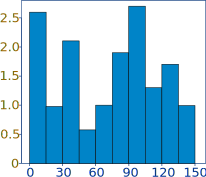
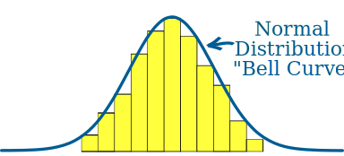
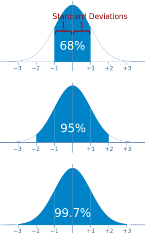
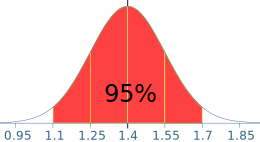
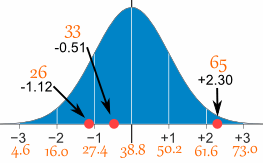

Normal Distribution
Data can be "distributed" (spread out) in different ways.
| It can be spread out more on the left |
Or more on the right |
|
 |
 |
|
| Or it can be all jumbled up |
|  |
But there are many cases where the data tends to be around a central value with no bias left or right, and it gets close to a "Normal Distribution" like this:

The blue curve is a Normal Distribution.
The yellow histogram shows
some data that
follows it closely,
but not perfectly (which is usual).
| It is often called a "Bell Curve" because it looks like a bell. |
Many things closely follow a Normal Distribution:
- heights of people
- size of things produced by machines
- errors in measurements
- blood pressure
- marks on a test
We say the data is "normally distributed":

The Normal Distribution has:
Quincunx
|
You can see a normal distribution being created by random chance! It is called the Quincunx and it is an amazing machine. Have a play with it! |
 |
Standard Deviations
The Standard Deviation is a measure of how spread out numbers are (read that page for details on how to calculate it).
When we calculate the standard deviation we find that generally:
|  |
68% of values are within
95% of values are within
99.7% of values are within |
Example: 95% of students at school are between 1.1m and 1.7m tall.
Assuming this data is normally distributed can you calculate the mean and standard deviation?
The mean is halfway between 1.1m and 1.7m:
Mean = (1.1m + 1.7m) / 2 = 1.4m
95% is 2 standard deviations either side of the mean (a total of 4 standard deviations) so:
| 1 standard deviation | = (1.7m-1.1m) / 4 |
| = 0.6m / 4 | |
| = 0.15m |
And this is the result:

It is good to know the standard deviation, because we can say that any value is:
- likely to be within 1 standard deviation (68 out of 100 should be)
- very likely to be within 2 standard deviations (95 out of 100 should be)
- almost certainly within 3 standard deviations (997 out of 1000 should be)
Standard Scores
The number of standard deviations from the mean is also called the "Standard Score", "sigma" or "z-score". Get used to those words!
Example: In that same school one of your friends is 1.85m tall
You can see on the bell curve that 1.85m is 3 standard deviations from the mean of 1.4, so:
Your friend's height has a "z-score" of 3.0
It is also possible to calculate how many standard deviations 1.85 is from the mean
How far is 1.85 from the mean?
It is 1.85 - 1.4 = 0.45m from the mean
How many standard deviations is that? The standard deviation is 0.15m, so:
0.45m / 0.15m = 3 standard deviations
So to convert a value to a Standard Score ("z-score"):
- first subtract the mean,
- then divide by the Standard Deviation
And doing that is called "Standardizing":

We can take any Normal Distribution and convert it to The Standard Normal Distribution.
Example: Travel Time
A survey of daily travel time had these results (in minutes):
26, 33, 65, 28, 34, 55, 25, 44, 50, 36, 26, 37, 43, 62, 35, 38, 45, 32, 28, 34
The Mean is 38.8 minutes, and the Standard Deviation is 11.4 minutes (you can copy and paste the values into the Standard Deviation Calculator if you want).
Convert the values to z-scores ("standard scores").
To convert 26:
So 26 is −1.12 Standard Deviations from the Mean
Here are the first three conversions
| Original Value | Calculation | Standard Score (z-score) |
| 26 | (26-38.8) / 11.4 = | −1.12 |
| 33 | (33-38.8) / 11.4 = | −0.51 |
| 65 | (65-38.8) / 11.4 = | +2.30 |
| ... | ... | ... |
And here they are graphically:

You can calculate the rest of the z-scores yourself!
The z-score formula that we have been using is:
z = x − μσ
- z is the "z-score" (Standard Score)
- x is the value to be standardized
- μ ('mu") is the mean
- σ ("sigma") is the standard deviation
And this is how to use it:
Example: Travel Time (continued)
Here are the first three conversions using the "z-score formula":
z = x − μσ
- μ = 38.8
- σ = 11.4
| x | x − μσ | z (z-score) |
|---|---|---|
| 26 | 26 − 38.811.4 | = −1.12 |
| 33 | 33 − 38.811.4 | = −0.51 |
| 65 | 65 − 38.811.4 | = +2.30 |
| ... | ... | ... |
The exact calculations we did before, just following the formula.
Why Standardize ... ?
It can help us make decisions about our data.
Example: Professor Willoughby is marking a test.
Here are the students' results (out of 60 points):
20, 15, 26, 32, 18, 28, 35, 14, 26, 22, 17
Most students didn't even get 30 out of 60, and most will fail.
The test must have been really hard, so the Prof decides to Standardize all the scores and only fail people more than 1 standard deviation below the mean.
The Mean is 23, and the Standard Deviation is 6.6, and these are the Standard Scores:
-0.45, -1.21, 0.45, 1.36, -0.76, 0.76, 1.82, -1.36, 0.45, -0.15, -0.91
Now only 2 students will fail (the ones lower than −1 standard deviation)
Much fairer!
It also makes life easier because we only need one table (the Standard Normal Distribution Table), rather than doing calculations individually for each value of mean and standard deviation.
In More Detail
Here is the Standard Normal Distribution with percentages for every half of a standard deviation, and cumulative percentages:

Example: Your score in a recent test was 0.5 standard deviations above the average, how many people scored lower than you did?
- Between 0 and 0.5 is 19.1%
- Less than 0 is 50% (left half of the curve)
So the total less than you is:
50% + 19.1% = 69.1%
In theory 69.1% scored less than you did (but with real data the percentage may be different)

A Practical Example: Your company packages sugar in 1 kg bags.
When you weigh a sample of bags you get these results:
- 1007g, 1032g, 1002g, 983g, 1004g, ... (a hundred measurements)
- Mean = 1010g
- Standard Deviation = 20g
Some values are less than 1000g ... can you fix that?
The normal distribution of your measurements looks like this:

31% of the bags are less than 1000g,
which is cheating the customer!
It is a random thing, so we can't stop bags having less than 1000g, but we can try to reduce it a lot.
Let's adjust the machine so that 1000g is:
- at −3 standard deviations:
- at −2.5 standard deviations:
So let us adjust the machine to have 1000g at −2.5 standard deviations from the mean.
Now, we can adjust it to:
- increase the amount of sugar in each bag (which changes the mean), or
- make it more accurate (which reduces the standard deviation)
Let us try both.
Adjust the mean amount in each bag

The standard deviation is 20g, and we need 2.5 of them:
2.5 × 20g = 50g
So the machine should average 1050g, like this:
Adjust the accuracy of the machine

Or we can keep the same mean (of 1010g), but then we need 2.5 standard deviations to be equal to 10g:
10g / 2.5 = 4g
So the standard deviation should be 4g, like this:
(We hope the machine is that accurate!)
Or perhaps we could have some combination of better accuracy and slightly larger average size, I will leave that up to you!
More Accurate Values ...
Use the Standard Normal Distribution Table when you want more accurate values.